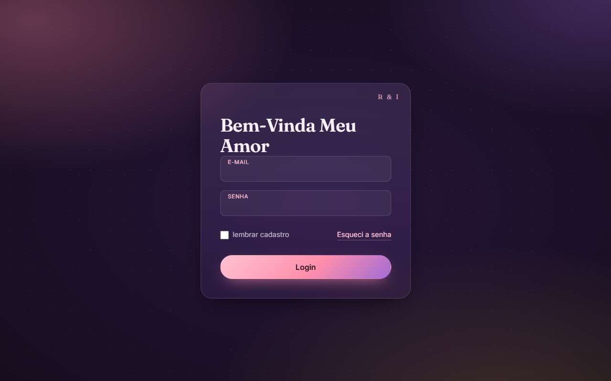
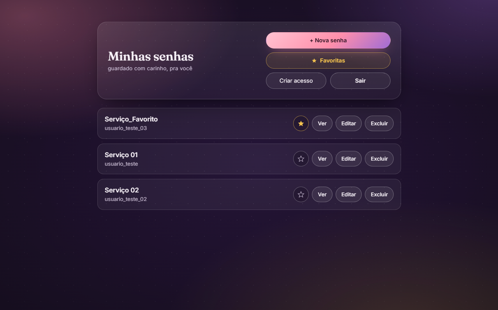
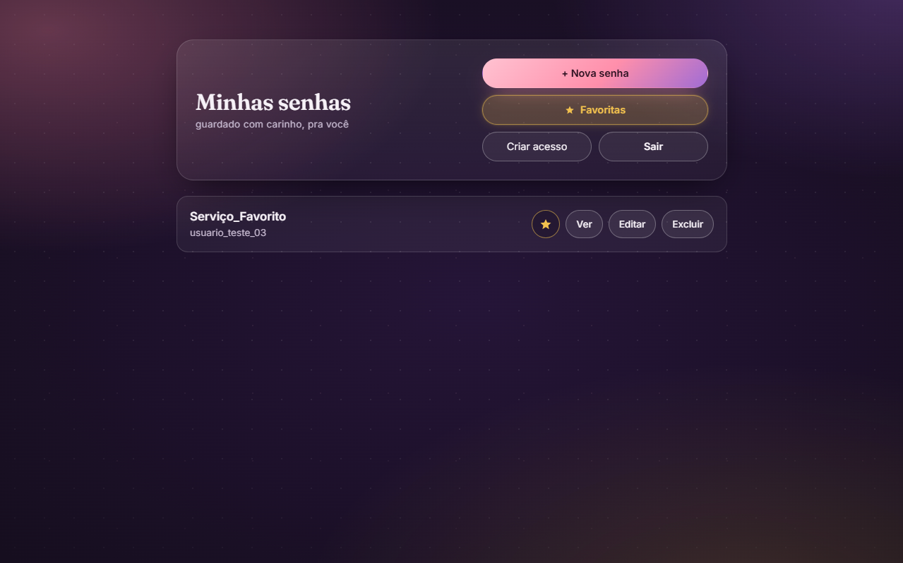
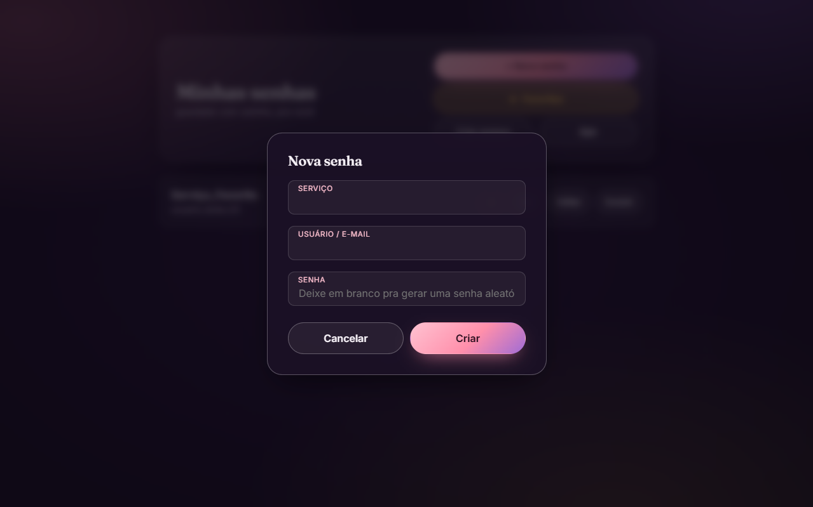
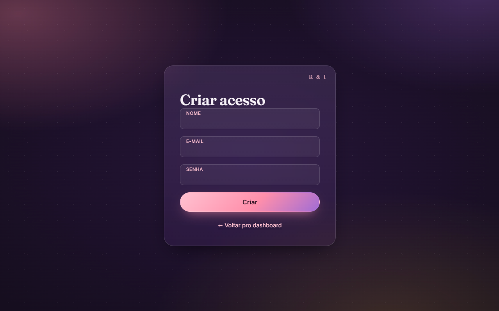
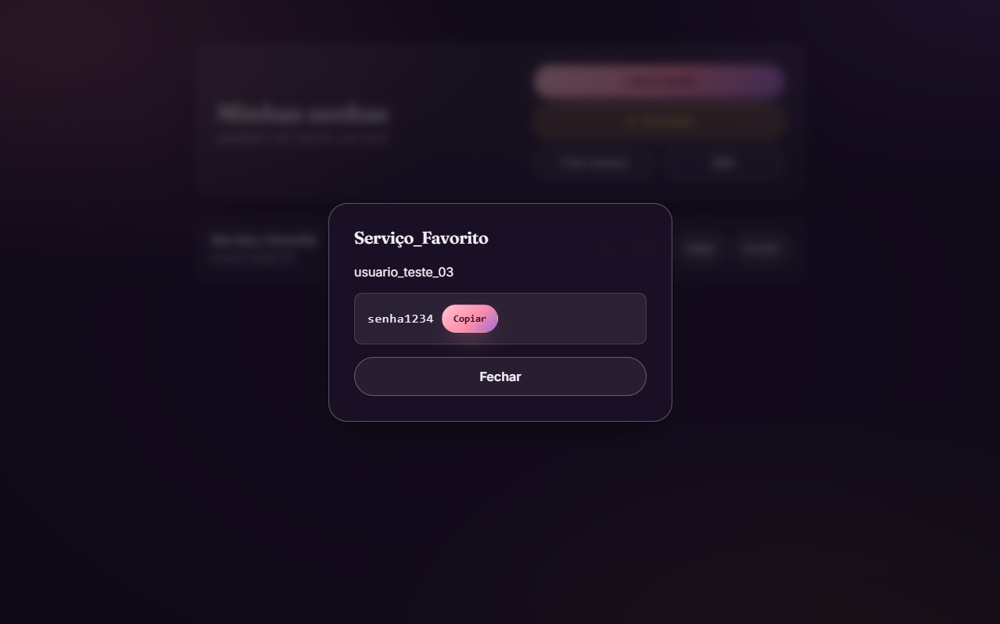

GET /projetos/isis-passwords
Isis Passwords
Gerenciador de senhas com criptografia forte e arquitetura em camadas, construído para uso restrito e seguro — meu playground pra aprender segurança de aplicação na prática.
GET /desafio
O problema
Um conhecido queria um gerenciador de senhas próprio, de uso restrito, onde eu tivesse controle total sobre como as senhas são armazenadas e criptografadas — em vez de confiar cegamente numa solução de terceiros. O objetivo era entender e implementar, na prática, os fundamentos de segurança que qualquer gerenciador de senhas sério precisa ter.
GET /o-que-fiz
O que eu construí
- Backend em camadas (router → controller → service → repository), separando bem regras de negócio de acesso a dados.
- Criptografia das senhas com AES-256-GCM (com auth tag) usando o módulo crypto nativo do Node — escolhido no lugar de CBC pela verificação de integridade que o GCM oferece.
- Fluxo de autenticação completo: login, registro, refresh com rotação de refresh token e logout, usando JWT (access token) + refresh token opaco salvo em tabela própria no banco.
- Refresh token entregue via cookie HTTP-only, não em localStorage — reduzindo a superfície de ataque contra XSS.
- Listagem de senhas que não decripta tudo de uma vez: a tela mostra só metadados, e a senha real só é decriptada sob demanda ao abrir um item específico.
GET /decisoes-tecnicas
Decisões técnicas e aprendizados
// decisão — Prisma no lugar de pg.Pool
Troquei o acesso cru ao banco via pg.Pool pelo Prisma ORM (v6, compatível com o setup em CommonJS) depois de esbarrar em erros recorrentes na camada de dados — ganhei tipagem e menos código repetido de query.
// decisão — sem decriptação em massa
Optei deliberadamente por não decriptar todas as senhas na listagem — só busco e decripto uma senha específica quando o usuário pede, reduzindo a exposição de dados sensíveis em memória.
// bug — auth quebrado
Corrigi um bug sutil no middleware de autenticação (split('') em vez de split(' ') ao ler o header) e um redirecionamento infinito causado pela falta de express.static configurado.
// acesso restrito
A rota de registro exige autenticação — não existe cadastro público. Só quem já está logado pode criar um novo acesso, o que mantém o app fechado para uso restrito.
GET /prints
Telas do sistema





